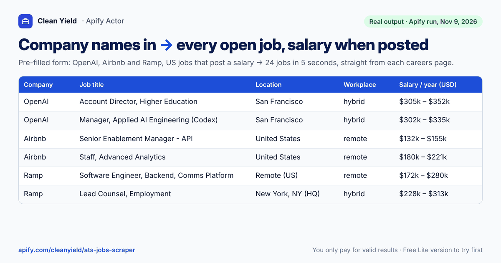

Job postings data API
Give a list of companies and filters (keywords, locations, remote, posted in the last N days) and get their live job postings in one format, read directly from each company’s careers page on 19 hiring systems, including Greenhouse, Lever, Ashby, Workday, Oracle Recruiting Cloud, SuccessFactors, iCIMS, Eightfold and Phenom.
For job-market analysts, HR tech and job boards that need fresh postings, and sales teams using hiring as a buying signal.

Try the Lite version first (no per-result charge) Full version in the Apify Store
Real example: input and output
Ten companies, filtered to remote product manager jobs. Two of the 22 jobs shown.
Input
{
"companies": [
"gitlab",
"posthog",
"vercel",
"linear",
"notion",
"ramp",
"airtable",
"figma",
"datadog",
"stripe"
],
"keywords": [
"product manager"
],
"workplaceTypes": [
"remote"
],
"includeDescription": "none"
}Output (selected fields)
[
{
"jobId": "greenhouse:gitlab:8919537002",
"ats": "greenhouse",
"company": "GitLab",
"title": "Staff Product Manager, Tenant Scale",
"department": "Platforms",
"location": "Remote, Canada; Remote, United States",
"countryCode": "CA",
"workplaceType": "remote",
"employmentType": null,
"salaryAnnualMin": 168000,
"salaryAnnualMax": 285600,
"salaryCurrency": "USD",
"salaryText": "United States Salary Range: USD 168,000–285,600",
"postedAt": "2026-11-03T16:15:32.000Z",
"applyUrl": "https://job-boards.greenhouse.io/gitlab/jobs/8919537002"
},
{
"jobId": "ashby:linear:b7669c4b-eeca-421d-ba9a-d90203f6fcb2",
"ats": "ashby",
"company": "Linear",
"title": "Product Manager",
"department": "Product",
"location": "North America",
"countryCode": "US",
"workplaceType": "remote",
"employmentType": "full_time",
"salaryAnnualMin": 204000,
"salaryAnnualMax": 252000,
"salaryCurrency": "USD",
"salaryText": "$204K - $252K",
"postedAt": "2026-01-21T22:22:21.799Z",
"applyUrl": "https://jobs.ashbyhq.com/linear/b7669c4b-eeca-421d-ba9a-d90203f6fcb2/application"
}
]Real run on Apify on 2026-11-09 (22 results). 22 jobs from 10 companies; 10 of the 22 include a salary range.
| Company | Job title | Location | Salary (annual) | Posted |
|---|---|---|---|---|
| Posthog | Product Manager, Observability (ex-founder or ex-product engineer) | Remote | not posted | 2026-10-06 |
| GitLab | Staff Product Manager, Agentic Planning | Remote, United States | USD 168,000–285,600 | 2026-10-23 |
| Linear | Product Manager | North America | USD 204,000–252,000 | 2026-01-21 |
| Stripe | Staff Product Manager, Billing | SF, NY, SEA, Remote-US | not posted | 2026-08-21 |
| Stripe | Product Manager, Radar | San Francisco, Seattle, New York, US - Remote | not posted | 2026-10-21 |
What you get
| Field | What it is |
|---|---|
| title, department, company | the job and who is hiring |
| location, city, countryCode, workplaceType | where, and whether it is remote, hybrid or onsite |
| employmentType | full-time, part-time, contract or internship, when the posting states it |
| salaryAnnualMin, salaryAnnualMax, salaryCurrency, salaryText | salary range when the company posts one (roughly half of jobs, depending on the company) |
| postedAt, url, applyUrl | posting date and direct links to the job and the application form |
| descriptionText / descriptionHtml | full job description, optional |
How to use it
In the Apify Store (no code)
- Start with the Lite version (up to 25 results per run, no per-result charge), or open the full version, and click Try for free (Apify account, free plan included).
- Paste your list in the form, or use the input above.
- Click Start and download the results as JSON, CSV or Excel.
From your code (API)
curl -X POST "https://api.apify.com/v2/acts/cleanyield~ats-jobs-scraper/run-sync-get-dataset-items?maxTotalChargeUsd=1" \
-H "Authorization: Bearer $APIFY_TOKEN" \
-H "Content-Type: application/json" \
-d '{
"companies": [
"gitlab",
"posthog",
"vercel",
"linear",
"notion",
"ramp",
"airtable",
"figma",
"datadog",
"stripe"
],
"keywords": [
"product manager"
],
"workplaceTypes": [
"remote"
],
"includeDescription": "none"
}'Create an API token in Apify Console → Settings → Integrations. maxTotalChargeUsd caps what the run can cost; the run stops there.
n8n and Make
In n8n, add the official Apify node; in Make, use the Apify app. Choose the Actor cleanyield/ats-jobs-scraper, paste the input JSON above, and read the dataset items in the next step. You can also schedule the Actor in Apify and send the results to a webhook, Google Sheets or Slack.
Price
- Today
- USD 2 per 1,000 jobs (USD 0.002 per job) plus USD 0.005 per run, on the Apify Free plan; Silver and Gold subscribers pay USD 1.20 per 1,000.
- From November 24, 2026
- USD 5 per 1,000 jobs (USD 0.005 per job) plus USD 0.005 per run; Silver and Gold USD 3 per 1,000.
Optional: monitor mode USD 0.004 per company checked, Pro mode + USD 0.005 per job, company details + USD 0.01 per company. Companies not found and failed requests are not charged.
Lite version: no per-result charge, up to 25 jobs per run (only Apify platform usage applies).
Try the Lite version first (no per-result charge) Full version in the Apify Store